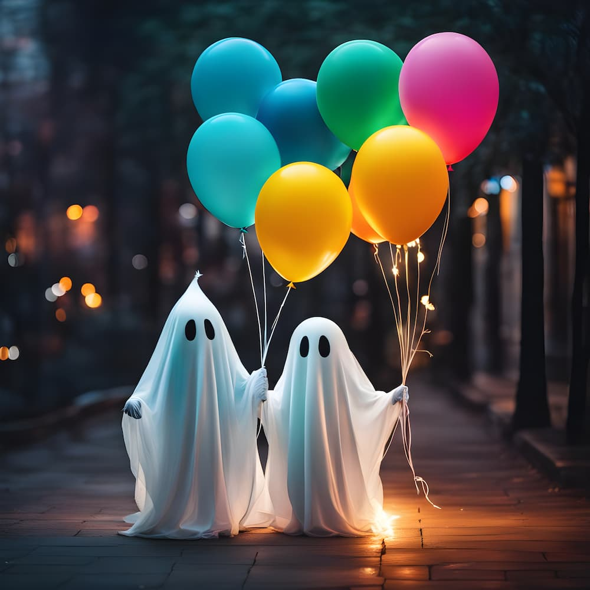
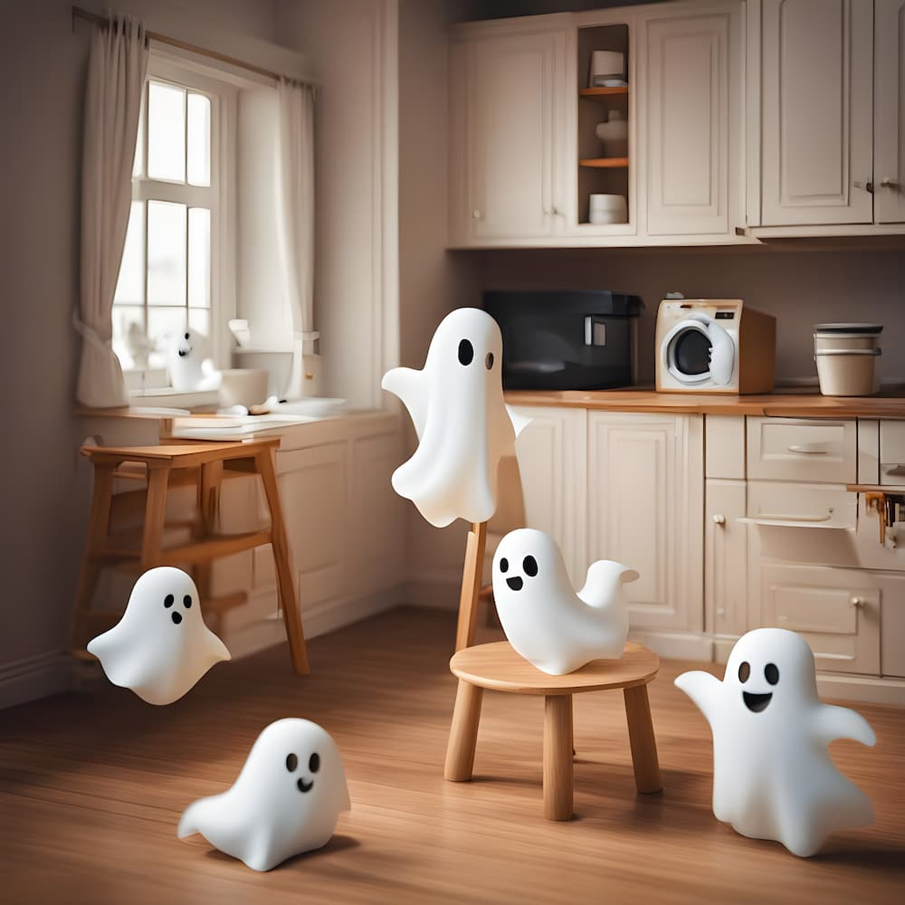
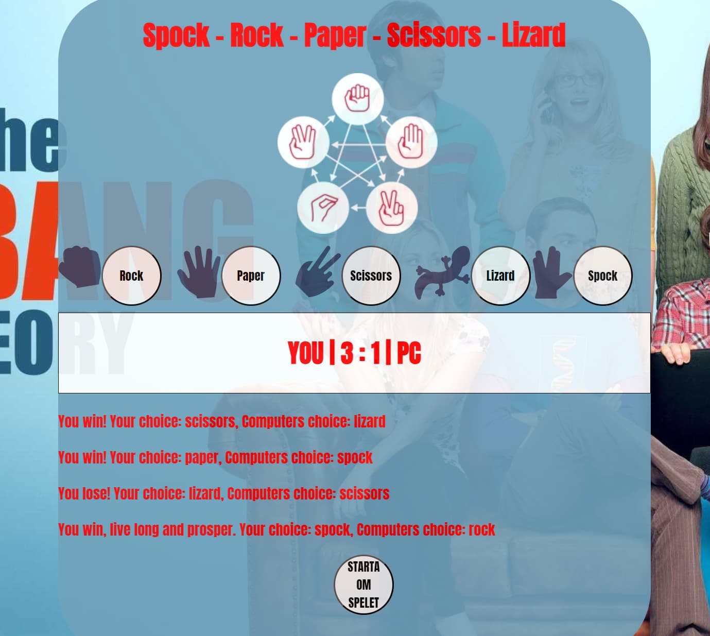
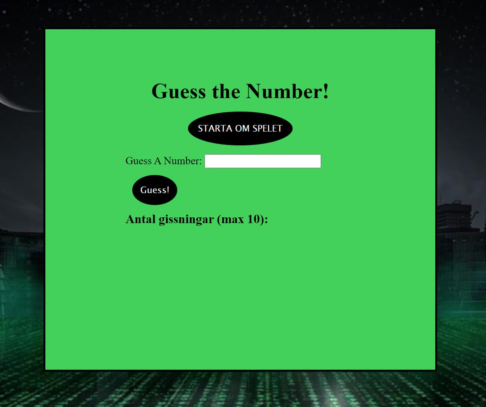

Projekt med AI genererade bilder

Detta är ett av mina projekt med små spöken, bilderna är helt ai genererade
efter mina kommandon.
Här är en låtsas-länk

Här kommer min version av Memory-spelet finnas när det är färdigt.
Länk till Memory-spelet på Github

Detta är ett av spelen jag skapade under JS code Jam, det är min version av "Sten Sax Påse".
Länk till Sten,Sax,Påse på Github

Detta är ett av spelen jag skapade under JS code Jam, det är min version av "Gissa numret".
Länk till RNG-spelet på Github